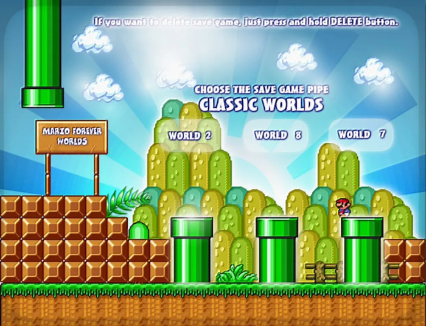
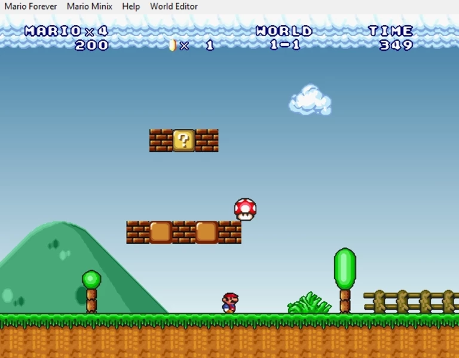
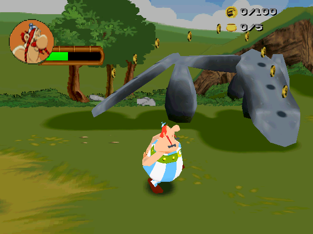
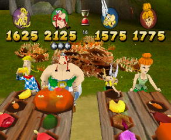

Mario Forever faz uma homenagem ao encanador italiano mais famoso do mundo. Foi desenvolvida por fãs poloneses e traz o popular Mario 3 (originalmente feito para Nintendo 8 bits) para a tela do seu computador. Este é o remake mais fiel ao original, sendo assim, toda a dinâmica de jogo foi preservada. Você pode baixar o jogo CLICANDO AQUI
 O Incrivel mundo de Mario, foi então desenvolvido para computador, trazendo consigo a Nostalgia de reviver os tempos antigos, quando não existiam preocupações e somente diversão.
Asterix: The Gallic War é um jogo de estratégia baseado em turnos desenvolvido pela Warthog e publicado pela Infogrames em 1999 para Microsoft Windows e PlayStation original. O jogador deve libertar todas as províncias gaulesas dos romanos e encontrar os ingredientes para uma das poções de Getafix , vencendo minijogos e fases de plataforma. Os ingredientes são encontrados no final dessas fases de plataforma. O Jogo foi desenvolvido a principio para PS1, mas você pode ter acesso ao arquivo .ISO para rodar no seu computador Atráves deste SITE
 